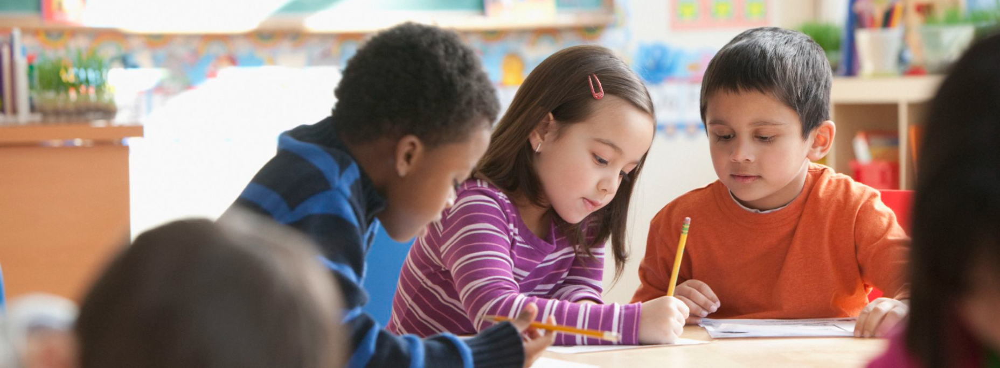
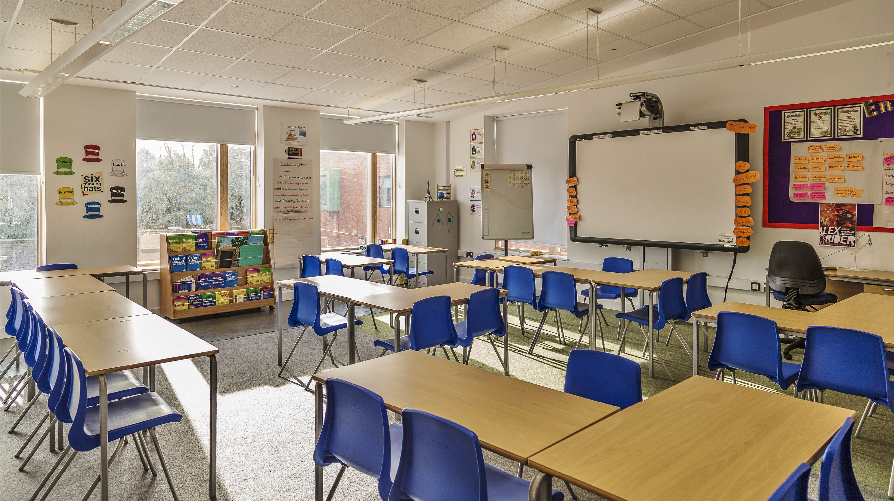

About Quality Education
Quality education is the foundation for improving people's lives and sustainable development. It ensures inclusive and equitable quality education and promotes lifelong learning opportunities for all.
Benefits of Quality Education
- Promotes economic growth.
- Reduces poverty and inequality.
- Improves health outcomes.
- Empowers individuals and communities.
Global Education Statistics
Here are some key statistics about global education:
- Approximately 258 million children and youth are out of school.
- Over 617 million children and adolescents are not achieving minimum proficiency levels in reading and mathematics.
- Gender disparities in education persist in many regions.
- Only 41% of children in low-income countries complete secondary education.